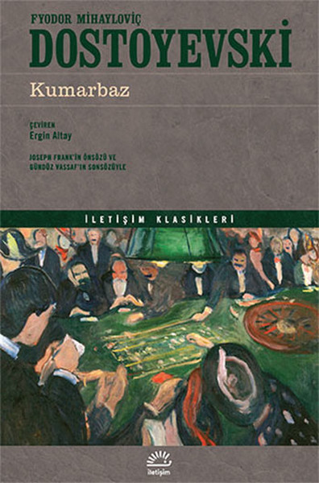

My Favourite Books

Gambler
A compulsive gambler himself at a certain period of his life, Dostoyevsky wrote this novel with real authority.
If you want to buy this book, please click buy button

A Tale Of Two Cities
'Liberty, equality, fraternity, or death; -- the last, much the easiest to bestow, O Guillotine!'
If you want to buy this book, please click buy button